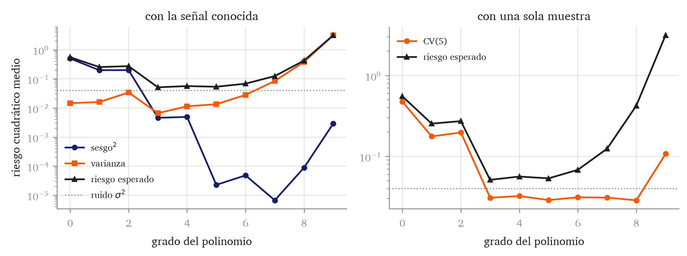

El capítulo anterior terminó con un diagnóstico: la clase de hipótesis considerada hasta ahora (funciones lineales) puede ser insuficiente.
Conviene ver primero qué tiene de limitante esa suposición. Para ello, simularemos una señal deliberadamente no lineal.
Código
import numpy as npimport torchfrom matplotlib import pyplot as plttorch.set_default_dtype(torch.float64)AZUL, GRIS, NARANJA, TINTA ="#151f6c", "#8b8e95", "#ff5700", "#1b1d21"NOISE =0.2REPETICIONES =2000rejilla = torch.linspace(0, 2, 400) def senal(x):return torch.sin(torch.pi * x)def genera(n, semilla): torch.manual_seed(semilla) x = torch.rand(n) *2return x, senal(x) + NOISE * torch.randn(n)x, y = genera(36, semilla=42)print(f"{len(x)} observaciones, entrada en [0, 2], ruido de nivel {NOISE}")print(f"suelo de ruido: sigma^2 = {NOISE **2:.4f}")
36 observaciones, entrada en [0, 2], ruido de nivel 0.2
suelo de ruido: sigma^2 = 0.0400
La señal es \(f(x)=\sin(\pi x)\) sobre \([0,2]\). El ruido es gaussiano de nivel \(\sigma=0.2\), de modo que ningún modelo puede tener un riesgo menor que \(\sigma^2=0.04\).
Figura 6.1: Las treinta y seis observaciones y la señal que las genera. La señal sube en la primera mitad del recorrido y baja en la segunda, así que ninguna recta puede seguirla: lo que una recta gane en un tramo lo pierde en el otro.
Ahora ajustemos una recta, y veamos qué sucede. Utilizaremos un tamaño muestral creciente. Nótese que, al conocer la señal real, podemos calcular estimar el riesgo verdadero.
def ajusta_recta(x, y): X = torch.stack([torch.ones(len(x)), x], dim=1)return torch.linalg.lstsq(X, y).solution1def riesgo_verdadero_recta(w, resolucion=2000): rejilla = torch.linspace(0, 2, resolucion) prediccion = w[0] + w[1] * rejillareturn ((prediccion - senal(rejilla)) **2).mean().item() + NOISE **2for n in (30, 300, 3000, 30000): w = ajusta_recta(*genera(n, semilla=42))print(f"n = {n:6d} riesgo verdadero de la recta ajustada: "f"{riesgo_verdadero_recta(w):.4f}")
1
Como conocemos la señal, podemos calcular el riesgo verdadero sin muestrear.
n = 30 riesgo verdadero de la recta ajustada: 0.2809
n = 300 riesgo verdadero de la recta ajustada: 0.2377
n = 3000 riesgo verdadero de la recta ajustada: 0.2366
n = 30000 riesgo verdadero de la recta ajustada: 0.2364
El riesgo baja de \(0.2809\) a \(0.2364\) y ahí se queda. Aumentar el tamaño del conjunto de entrenamiento no es capaz de reducir este riesgo.
Figura 6.2: La recta ajustada con treinta observaciones y con cien veces más.
Lo que necesitamos para reducir este riesgo es una clase de hipótesis que contenga funciones no lineales. Hay una forma de conseguirla esto sin abandonar nada de lo que sabemos.
Definición 6.1 (Mapa de características) Un mapa de características es una función \(\boldsymbol{\varphi}:\mathbb{R}^{p}\to\mathbb{R}^{d}\) que transforma el vector de variables predictoras en un vector de \(d\)características\(\boldsymbol{\varphi}(\mathbf{x})=\bigl(\varphi_1(\mathbf{x}),\ldots,\varphi_{d}(\mathbf{x})\bigr)^{\mathsf{T}}\). El modelo asociado es
y la matriz de características\(\boldsymbol{\Phi}\in\mathbb{R}^{n\times d}\) tiene por fila \(i\) el vector \(\boldsymbol{\varphi}(\mathbf{x}_i)^{\mathsf{T}}\).
Considerando este mapa de características, el modelo generador completo es el gaussiano de Definición 1.4, con Ecuación 6.1 en el lugar de la señal,
que es el modelo lineal-gaussiano de Definición 1.6 con \(\boldsymbol{\varphi}(\mathbf{x}_i)\) en lugar de \(\mathbf{x}_i\). Corolario 2.1 sigue aplicando, y ajustar por máxima verosimilitud sigue siendo minimizar el riesgo cuadrático.
Es importante señalar que la expresión de Ecuación 6.1 es no lineal en la entrada pero lineal en los parámetros, esto garantiza lo siguiente.
Proposición 6.1 (Lo visto en el capítulo 3 sigue aplicando) El problema de minimizar el riesgo cuadrático empírico sobre el modelo Ecuación 6.1 sobre \(\boldsymbol{w}\) es el mismo problema del capítulo 3 con \(\boldsymbol{\Phi}\) en lugar de \(\mathbf{X}\). En particular, el gradiente es \(\frac{2}{n}\boldsymbol{\Phi}^{\mathsf{T}}(\boldsymbol{\Phi}\boldsymbol{w}-\mathbf{y})\), las ecuaciones normales son \(\boldsymbol{\Phi}^{\mathsf{T}}\boldsymbol{\Phi}\boldsymbol{w}=\boldsymbol{\Phi}^{\mathsf{T}}\mathbf{y}\), y el ajuste es único si \(\boldsymbol{\Phi}\) tiene rango completo por columnas.
Demostración. El riesgo empírico es \(\hat{R}(\boldsymbol{w})=\frac{1}{n}\left\lVert \mathbf{y}-\boldsymbol{\Phi}\boldsymbol{w} \right\rVert^2\), que es literalmente la expresión de Proposición 3.1 con \(\boldsymbol{\Phi}\) en el lugar de \(\mathbf{X}\). Ninguna de las demostraciones del capítulo 3 usa de dónde salen las columnas de la matriz, solo que sean números fijos dada la muestra, y las características lo son porque \(\boldsymbol{\varphi}\) no depende de \(\boldsymbol{w}\). Por tanto se aplican sin cambios Teorema 3.1 y Teorema 3.2.
La consecuencia práctica es que ajustar este nuevo modelo no cuesta ni un algoritmo nuevo ni una teoría nueva: simplemente tenemos que construir la nueva matriz de características.
Comencemos por entender un caso sencillo. Si contamos con una única variable predictora, podemos construir un mapa de características tomando sus potencias hasta un grado \(d\),
Qué grado \(d\) elegir es el asunto que discute este capítulo. Probemos con tres valores diferentes y observemos qué sucede.
def caracteristicas(x, grado):return torch.stack([x ** j for j inrange(grado +1)], dim=1)def ajusta(x, y, grado):return torch.linalg.lstsq(caracteristicas(x, grado), y).solutiondef riesgo_verdadero(w, grado, resolucion=2000): rejilla = torch.linspace(0, 2, resolucion) prediccion = caracteristicas(rejilla, grado) @ wreturn ((prediccion - senal(rejilla)) **2).mean().item() + NOISE **2print(f"{'grado':>6}{'parámetros':>11} "f"{'riesgo en train':>16}{'riesgo verdadero':>17}")for grado in (1, 3, 9): w = ajusta(x, y, grado) en_train = ((caracteristicas(x, grado) @ w - y) **2).mean().item()print(f"{grado:6d}{grado +1:11d}{en_train:16.4f} "f"{riesgo_verdadero(w, grado):17.4f}")
grado parámetros riesgo en train riesgo verdadero
1 2 0.1538 0.2384
3 4 0.0217 0.0546
9 10 0.0146 0.0793
Como podemos observar, el riesgo en train baja siempre al añadir grado. No obstante, el riesgo verdadero no: baja de \(0.2384\) a \(0.0546\) y vuelve a subir a \(0.0793\). El modelo de grado 1 no es suficientemente expresivo mientras que el modelo de grado 9 está sobreajustado (recuerda la Definición 1.2). El resto de este capítulo trata de arrojar luz sobre estos conceptos.
Figura 6.3: Los tres ajustes de la tabla sobre las mismas treinta y seis observaciones. La recta no llega a curvarse; el grado 3 sigue aproximadamente la señal; el grado 9 pasa más cerca de los puntos y por eso baja el riesgo en train.
Características polinómicas e interacciones
Con una sola variable predictora, las características polinómicas son las potencias. Con \(p\) variables hay que decidir además qué productos entre ellas se incluyen.
from math import combprint(f"{'variables':>10} "+" ".join(f"{'grado '+str(g):>10}"for g in (1, 2, 3, 5)))for nfeat in (1, 2, 8):1 cuenta = [comb(nfeat + g, g) -1for g in (1, 2, 3, 5)]print(f"{nfeat:10d} "+" ".join(f"{c:10d}"for c in cuenta))
1
El número de monomios de grado menor o igual que \(g\) en \(p\) variables es \(\binom{p+g}{g}\), y se resta uno para no contar el término constante, que ya está en la columna de unos.
variables grado 1 grado 2 grado 3 grado 5
1 1 2 3 5
2 2 5 9 20
8 8 44 164 1286
Con las ocho variables numéricas del capítulo 5, pasar a grado 2 son 44 características y a grado 3 son 164. La dimensión crece deprisa, y cada característica nueva es un parámetro más que hay que estimar con las mismas observaciones.
Entre esos productos hay uno de especial relevancia. Un término \(x_1x_2\) hace que el efecto de \(x_1\) sobre la predicción dependa del valor de \(x_2\), porque la derivada de \(w_0+w_1x_1+w_2x_2+w_3x_1x_2\) respecto de \(x_1\) vale \(w_1+w_3x_2\). Ese producto es una interacción: sin él, el efecto de \(x_1\) sobre la predicción es el mismo cualquiera que sea el valor de \(x_2\). Lo observamos en la siguiente figura.
Figura 6.4: La predicción de \(w_0+w_1x_1+w_2x_2+w_3x_1x_2\) frente a \(x_1\), para dos valores de \(x_2\). Sin el producto las dos rectas son paralelas. Con él las pendientes son \(w_1\) y \(w_1+w_3\).
Un algoritmo produce modelos distintos con muestras distintas
Hasta ahora hemos presentado una forma de construir una nueva clase de hipótesis más flexible. No obstante, hemos observado que el riesgo verdadero puede aumentar si nos excedemos con la complejidad (por ejemplo, subiendo demasiado el grado del polinomio).
Para entender por qué ocurre esto, no basta con mirar un único ajuste. Tenemos que evaluar el procedimiento de aprendizaje en su conjunto, estudiando qué sucede si aplicamos nuestro algoritmo a múltiples muestras de entrenamiento distintas extraídas del mismo universo.
En el siguiente experimento vamos a simular 2000 realidades alternativas. En cada una, extraeremos una muestra aleatoria independiente de 36 observaciones, ajustaremos un modelo polinómico y guardaremos la curva resultante. Haremos esto para los grados 1, 3 y 9.
Figura 6.5: Cien de los dos mil ajustes obtenidos con muestras distintas de treinta y seis observaciones, para tres grados. Con grado 1 las rectas casi coinciden entre sí, pero su promedio no se parece a la señal. Con grado 9 el modelo medio sí calca la señal, pero cada curva individual es errática.
En la figura se ven tres comportamientos marcadamente diferentes.
Panel izquierdo (Grado 1): Modelo estable pero sistemáticamente equivocado. El modelo es tan rígido que apenas cambia de una muestra a otra; todas las líneas naranjas están muy juntas (baja varianza). Sin embargo, el modelo medio es incapaz de seguir la curvatura de la señal negra real (alto sesgo).
Panel derecho (Grado 9): Modelo inestable pero centrado. El modelo es tan flexible que persigue el ruido específico de cada muestra de 36 puntos, produciendo curvas que se disparan en todas direcciones (alta varianza). No obstante, si promediamos esas miles de curvas erráticas, el modelo medio calca la señal subyacente casi a la perfección (bajo sesgo).
El grado 3 (centro) queda entre los dos extremos: es lo bastante flexible para seguir la curva (bajo sesgo), pero lo bastante rígido para no seguir el ruido de cada muestra (baja varianza).
A continuación, formalizamos matemáticamente este fenómeno.
La descomposición sesgo-varianza
Queremos responder a la siguiente pregunta: si aplicáramos un mismo procedimiento de ajuste (i.e. algoritmo y clase de hipótesis elegida) repetidas veces sobre distintas muestras de datos de un tamaño dado, ¿cuánto se equivocarían en promedio los modelos resultantes al predecir observaciones futuras?
Para formalizar esto, debemos separar el problema en dos niveles. Primero, fijaremos nuestra atención en una sola observación nueva con características \(\mathbf{x}\) concretas (por ejemplo, \(x=1.5\)). El error de predicción que cometeremos sobre esta observación depende de dos fuentes de aleatoriedad independientes:
La procedente de la muestra de entrenamiento (\(\mathcal{D}\)): Nuestro modelo ajustado \(\hat{f}_{\mathcal{D}}\) es una variable aleatoria, pues depende de la muestra \(\mathcal{D}\) (que son \(n\) extracciones independientes de la distribución \(P^\star\) de Definición 2.3) que nos haya tocado para entrenar. Por tanto, calcular el rendimiento promedio exige tomar la esperanza sobre todas las posibles muestras de entrenamiento. Escribimos este valor esperado como \(\mathbb{E}_{\mathcal{D}}\!\left[ \cdot \right]\). Con ella se define el modelo medio.
El modelo medio es, punto a punto, la predicción que da el algoritmo en promedio sobre todas las muestras posibles de tamaño \(n\). No es un modelo que se pueda ajustar con unos datos concretos, porque para calcularlo hacen falta todas las muestras posibles: es la curva naranja gruesa de Figura 6.5, el promedio de las dos mil finas.
El ruido del dato futuro (\(\varepsilon\)): El valor real \(Y\) que intentamos predecir no es determinista, pues asumimos que el modelo generador de Definición 1.4 lo produce como \(Y = f(\mathbf{x}) + \varepsilon\). Este ruido es estadísticamente independiente de la muestra de entrenamiento \(\mathcal{D}\). De forma análoga al punto anterior, utilizaremos el operador \(\mathbb{E}_{\varepsilon}\!\left[ \cdot \right]\) para denotar la esperanza sobre la distribución de este nuevo ruido, del cual asumimos que tiene media cero (\(\mathbb{E}_{\varepsilon}\!\left[ \varepsilon \right]=0\)) y varianza constante (\(\mathrm{Var}\!\left( \varepsilon \right)=\sigma^2\)).
Para dar respuesta a la pregunta que abría la sección (cuánto se equivocaría en promedio nuestro procedimiento al predecir), debemos evaluar el error en este punto \(\mathbf{x}\) promediando sobre ambas fuentes de aleatoriedad. Matemáticamente, esta métrica es la esperanza conjunta \(\mathbb{E}_{\mathcal{D},\varepsilon}\!\left[ (Y - \hat{f}_{\mathcal{D}}(\mathbf{x}))^2 \right]\). El teorema siguiente descompone esta cantidad en tres términos. Para que la identidad se cumpla, hacen falta cuatro supuestos:
Pérdida cuadrática. La descomposición es una propiedad algebraica exclusiva del error cuadrático; con otra función de pérdida no existe una descomposición análoga.
Muestra aleatoria y ajuste determinista. \(\mathcal{D}\) está formada por \(n\) extracciones independientes de \(P^\star\), y el procedimiento de ajuste es una función determinista de \(\mathcal{D}\): toda la aleatoriedad de nuestro modelo proviene exclusivamente de la muestra.
Observación futura independiente. El par \((\mathbf{x},Y)\) que se predice no pertenece a \(\mathcal{D}\), y su ruido intrínseco \(\varepsilon\) es independiente de la muestra de entrenamiento y tiene media cero.
Varianza del ruido constante. \(\mathrm{Var}\!\left( \varepsilon \right)=\sigma^2\) no depende de \(\mathbf{x}\). Sin esto, al promediar posteriormente sobre todo el espacio de características \(X\), el término del ruido no sería un único número \(\sigma^2\).
Teorema 6.1 (Descomposición sesgo-varianza) Fijado un punto \(\mathbf{x}\), sea \(Y = f(\mathbf{x}) + \varepsilon\) la observación futura real. Sea \(\hat{f}_{\mathcal{D}}(\mathbf{x})\) la predicción de nuestro algoritmo entrenado con la muestra aleatoria \(\mathcal{D}\), y sea \(\bar{\hat{f}}(\mathbf{x})\) el modelo medio de Ecuación 6.4].
Bajo los cuatro supuestos anteriores, el error cuadrático esperado se descompone en:
Demostración. Para aligerar la notación, escribiremos \(\hat{f}=\hat{f}_{\mathcal{D}}(\mathbf{x})\), \(f=f(\mathbf{x})\) y \(\bar{\hat{f}}=\bar{\hat{f}}(\mathbf{x})\). La demostración comienza expandiendo el error; para ello, sustituimos \(Y\) por su definición (\(f+ \varepsilon\)) y sumamos y restamos el modelo medio \(\bar{\hat{f}}\):
Al aplicar la esperanza conjunta \(\mathbb{E}_{\mathcal{D},\varepsilon}\!\left[ \cdot \right]\), la linealidad de la esperanza nos permite analizar cada componente por separado. Veamos paso a paso cómo los tres términos cruzados se anulan:
El cruce entre el ruido y el sesgo:\[
\mathbb{E}_{\mathcal{D},\varepsilon}\!\left[ 2\varepsilon(f-\bar{\hat{f}}) \right] = 2(f-\bar{\hat{f}})\,\mathbb{E}_{\varepsilon}\!\left[ \varepsilon \right] = 0
\] Una vez fijado \(\mathbf{x}\), tanto la señal verdadera \(f\) como el modelo medio \(\bar{\hat{f}}\) son constantes (no dependen de la muestra concreta ni del ruido). Por tanto, salen fuera de la esperanza. Como asumimos que el ruido tiene media cero (\(\mathbb{E}_{\varepsilon}\!\left[ \varepsilon \right]=0\)), todo el término se anula.
El cruce entre el ruido y la varianza:\[
\mathbb{E}_{\mathcal{D},\varepsilon}\!\left[ 2\varepsilon(\bar{\hat{f}}-\hat{f}) \right] = 2\,\mathbb{E}_{\varepsilon}\!\left[ \varepsilon \right]\,\mathbb{E}_{\mathcal{D}}\!\left[ \bar{\hat{f}}-\hat{f} \right] = 0
\] Aquí resulta vital el tercer supuesto. Como el ruido de la observación futura (\(\varepsilon\)) es estadísticamente independiente de la muestra de entrenamiento (\(\mathcal{D}\)), la esperanza conjunta de su producto se separa en el producto de sus esperanzas individuales. Al ser \(\mathbb{E}_{\varepsilon}\!\left[ \varepsilon \right]=0\), el término entero desaparece.
El cruce entre el sesgo y la varianza:\[ \mathbb{E}_{\mathcal{D},\varepsilon}\!\left[ 2(f-\bar{\hat{f}})(\bar{\hat{f}}-\hat{f}) \right] = 2(f-\bar{\hat{f}})\,\mathbb{E}_{\mathcal{D}}\!\left[ \bar{\hat{f}}-\hat{f} \right] = 0 \] Este término no contiene \(\varepsilon\), por lo que la esperanza actúa únicamente sobre \(\mathcal{D}\). La parte constante \((f-\bar{\hat{f}})\) sale fuera. Por la propia definición del modelo medio en Ecuación 6.4, la esperanza de las desviaciones de un modelo respecto a su propia media es cero: \(\mathbb{E}_{\mathcal{D}}\!\left[ \bar{\hat{f}}-\hat{f} \right] = \bar{\hat{f}} - \bar{\hat{f}} = 0\).
Al anularse todos los cruces, solo sobreviven las esperanzas de los tres cuadrados individuales:
Como el ruido tiene media cero, sabemos que \(\mathbb{E}_{\varepsilon}\!\left[ \varepsilon^2 \right] = \mathrm{Var}\!\left( \varepsilon \right) = \sigma^2\). Sustituyendo esto, obtenemos exactamente la identidad de Ecuación 6.5.
Estos tres sumandos no solo explican por qué nos equivocamos, sino que nos dan el diagnóstico exacto de cómo de bien va a funcionar nuestro procedimiento de aprendizaje ante datos futuros. Nos dicen si nuestras predicciones fallarán porque somos demasiado rígidos (sesgo), demasiado inestables (varianza) o porque la naturaleza es inherentemente impredecible (ruido):
El ruido (\(\sigma^2\)) es la varianza intrínseca de \(Y\) una vez fijado \(\mathbf{x}\). Ningún procedimiento, por muchos datos que tenga o muy avanzado que sea el algoritmo, bajará de aquí: es el suelo inexpugnable del error que el capítulo 2 anunció.
El sesgo al cuadrado mide la distancia entre la señal verdadera \(f\) y nuestro modelo medio \(\bar{\hat{f}}\) (la separación entre la curva negra y la curva gruesa naranja de Figura 6.5). Este error no se atenúa con más datos, ya que un procedimiento demasiado rígido (como ajustar líneas rectas) nunca podrá adoptar una forma curva por muchas observaciones que reciba. Depende exclusivamente de la clase de hipótesis elegida. La única forma de reducir el sesgo es aumentar la complejidad del modelo (por ejemplo, subiendo el grado del polinomio o añadiendo variables), dotando a nuestro procedimiento de la capacidad geométrica necesaria para calcar la señal real.
La varianza mide cuánto se mueve un modelo concreto \(\hat{f}_{\mathcal{D}}\) alrededor de su propio promedio \(\bar{\hat{f}}\) por culpa de la muestra específica que le tocó (la dispersión de las finas líneas naranjas). Es el precio directo de la flexibilidad: al aumentar la complejidad para reducir el sesgo, le damos al algoritmo tanta libertad que empieza a perseguir el ruido de cada muestra. Sin embargo, a diferencia del sesgo, la varianza sí se atenúa con más datos, ya que un conjunto de entrenamiento más grande estabiliza el algoritmo y evita que el modelo dé bandazos.
La ecuación anterior detalla el error para un solo punto fijo \(\mathbf{x}\). Para calcular el riesgo esperado de Definición 4.4, solo nos falta un último paso: promediar ese resultado sobre todas las posibles características \(\mathbf{x}\) que nos encontraremos en la realidad (es decir, tomar la esperanza sobre la distribución marginal de \(X\) bajo \(P^\star\)).
Como la esperanza es un operador lineal, la descomposición sobrevive intacta a nivel global:
La última columna es la suma de los tres términos, y Ecuación 6.5 dice que esa suma es el riesgo esperado. Conviene comprobarlo midiendo el riesgo esperado por el otro camino: el promedio, sobre los dos mil ajustes, del error cuadrático que cada uno comete contra la señal.
def riesgo_directo(grado, n=36, repeticiones=REPETICIONES, semilla=0): P = muchos_ajustes(grado, n=n, repeticiones=repeticiones, semilla=semilla)1return NOISE **2+ ((P - senal(rejilla)) **2).mean().item()print(f"{'grado':>6}{'suma de los tres':>18}{'directo':>10}")for grado in (1, 3, 9):print(f"{grado:6d}{descomposicion[grado][2]:18.4f} "f"{riesgo_directo(grado):10.4f}")
1
Se promedia sobre los dos mil ajustes y sobre la rejilla a la vez, sin separar sesgo de varianza. Los dos caminos usan las mismas dos mil muestras, así que lo que se comprueba es la identidad algebraica de Ecuación 6.5, no el valor de \(\sigma^2\), que aquí se suma por conocido.
grado suma de los tres directo
1 0.2541 0.2541
3 0.0512 0.0512
9 3.1543 3.1543
La tabla revela la tensión fundamental del aprendizaje automático:
El sesgo al cuadrado cae drásticamente desde \(0.4988\) (grado 0) hasta \(0.0046\) al llegar al grado 3. A partir de ahí, apenas varía. La razón geométrica es simple: un polinomio cúbico ya es lo suficientemente flexible para imitar la forma de la onda \(\sin(\pi x)\) en este intervalo. Añadir potencias mayores no acerca mucho más el modelo medio a la señal real porque el problema de “falta de capacidad” ya está resuelto.
La varianza explota: La varianza hace exactamente lo contrario. Se mantiene baja hasta el grado 3 (\(0.0066\)) y luego se descontrola subiendo hasta \(3.1114\) para grado 9. El motivo es la sobreparametrización: al intentar estimar 10 parámetros con solo 36 observaciones repartidas al azar, el modelo tiene demasiada libertad. El polinomio persigue el ruido específico de cada muestra y se dispara en los huecos entre los puntos, provocando que la curva cambie radicalmente de una muestra a otra.
El riesgo total sigue una curva en U: La suma de los tres términos (sesgo, varianza y el ruido constante de \(0.0400\)) es el riesgo esperado. Al chocar la caída del sesgo con la explosión de la varianza, el riesgo total forma una U. El mínimo no está en los extremos, sino en el interior: el grado 3 encuentra el equilibrio óptimo.
La curva en U y lo que la validación cruzada logra ver
La suma de la sección anterior (el riesgo esperado total) solo se puede calcular porque en esta simulación conocemos la señal verdadera y podemos promediar miles de muestras. En el mundo real, solo tenemos una única muestra y la señal es desconocida.
¿Cómo estimamos entonces esta curva en la práctica? Recordando lo que establecimos en Sección 4.4.2: la validación cruzada no evalúa el modelo final, sino que estima el riesgo esperado del procedimiento de Definición 4.4. Al partir nuestra única muestra en bloques y ajustar múltiples modelos, la cantidad de Ecuación 4.2 simula empíricamente esa esperanza \(\mathbb{E}_{\mathcal{D}}\!\left[ \cdot \right]\) teórica. Conviene comprobar qué es lo que realmente logra ver frente a la verdad teórica.
from sklearn.model_selection import KFolddef cv_riesgo(grado, x, y, n_bloques=5, semilla=9): particion = KFold(n_splits=n_bloques, shuffle=True, random_state=semilla) riesgos = []for i_ajuste, i_val in particion.split(x.numpy()): w = torch.linalg.lstsq(caracteristicas(x[i_ajuste], grado), y[i_ajuste]).solution riesgos.append(((caracteristicas(x[i_val], grado) @ w- y[i_val]) **2).mean().item())returnfloat(np.mean(riesgos)), riesgosprint(f"{'grado':>6}{'train':>9}{'CV(5)':>9}{'ee':>7}{'esperado':>10}")tabla_cv = {}bloques_cv = {}for grado inrange(0, 10): cv, bloques = cv_riesgo(grado, x, y) w = ajusta(x, y, grado) tabla_cv[grado] = cv bloques_cv[grado] = np.array(bloques)print(f"{grado:6d} "f"{((caracteristicas(x, grado) @ w - y) **2).mean():9.4f} "f"{cv:9.4f}{np.std(bloques, ddof=1) / np.sqrt(5):7.4f} "f"{descomposicion[grado][2]:10.4f}")
grados =list(range(10))fig, ax = plt.subplots(1, 2, figsize=(8.4, 3.2))ax[0].plot(grados, [descomposicion[g][0] for g in grados], marker="o", ms=4, color=AZUL, label="sesgo$^2$")ax[0].plot(grados, [descomposicion[g][1] for g in grados], marker="s", ms=4, color=NARANJA, label="varianza")ax[0].plot(grados, [descomposicion[g][2] for g in grados], marker="^", ms=4, color=TINTA, label="riesgo esperado")ax[0].axhline(NOISE **2, color=GRIS, lw=1, linestyle=":", label=r"ruido $\sigma^2$")ax[0].set(xlabel="grado del polinomio", ylabel="riesgo cuadrático medio", yscale="log", title="con la señal conocida")ax[0].legend(fontsize=8)ax[1].plot(grados, [tabla_cv[g] for g in grados], marker="o", ms=4, color=NARANJA, label="CV(5)")ax[1].plot(grados, [descomposicion[g][2] for g in grados], marker="^", ms=4, color=TINTA, label="riesgo esperado")ax[1].axhline(NOISE **2, color=GRIS, lw=1, linestyle=":")ax[1].set(xlabel="grado del polinomio", yscale="log", title="con una sola muestra")ax[1].legend(fontsize=8)plt.tight_layout()

Figura 6.6: A la izquierda, la descomposición: la rama izquierda de la curva del riesgo es sesgo y la derecha es varianza. A la derecha, lo que se puede calcular con una sola muestra de treinta y seis observaciones. La validación cruzada reproduce la rama izquierda con nitidez y la derecha solo a partir del grado 9.
La comparación de los dos paneles nos advierte de los límites de medir con muestras pequeñas. La validación cruzada ve la rama del sesgo perfectamente: distingue sin ambigüedad los grados 0, 1 y 2 del resto. Sin embargo, en la rama de la varianza fracasa: entre los grados 3 y 8 devuelve valores estancados entre \(0.0286\) y \(0.0323\), colocando su aparente mínimo en el grado 8.
Aquí debemos separar rigurosamente dos cantidades que conviene no confundir:
El error de estimación: La validación cruzada nos promete que el riesgo del grado 8 es \(0.0286\), pero la verdad teórica es \(0.4239\). La herramienta es demasiado optimista y se equivoca por un factor de quince al evaluar este candidato.
El coste de elegir mal: Si caemos en la trampa del mínimo aparente y entregamos el grado 8, el riesgo real será \(0.4239\). Si entregamos el grado 3, el riesgo será de \(0.0512\). Elegir mal multiplica nuestro error en producción por ocho.
¿Por qué se equivoca la CV? Es Proposición 4.3 otra vez: el mínimo de varias estimaciones ruidosas es optimista y cae donde el ruido lo lleve. La regla de un error típico (Definición 4.7) no mejora esa estimación, pero sí cambia la decisión. Apliquémosla sobre esta tabla, con sus tres pasos.
def compara_con_campeon(grado, campeon, bloques): d = bloques[grado] - bloques[campeon]return d.mean(), d.std(ddof=1) / np.sqrt(len(d))1def regla_un_error_tipico(bloques): campeon =min(bloques, key=lambda g: bloques[g].mean()) dentro = []for grado inrange(campeon): dif, ee_dif = compara_con_campeon(grado, campeon, bloques)if dif < ee_dif: dentro.append(grado)return campeon, min(dentro, default=campeon)campeon, entregado = regla_un_error_tipico(bloques_cv)print(f"campeón: grado {campeon}")print(f"{'grado':>6}{'diferencia':>12}{'error típico':>14} "f"{'cociente':>10}")for grado inrange(campeon): dif, ee_dif = compara_con_campeon(grado, campeon, bloques_cv)print(f"{grado:6d}{dif:+12.4f}{ee_dif:14.4f} "f"{dif / ee_dif:10.2f}")print(f"\ngrado entregado: {entregado}, con un riesgo esperado de "f"{descomposicion[entregado][2]:.4f}")2reparto = {}for semilla inrange(40): otra = {grado: np.array(cv_riesgo(grado, x, y, semilla=semilla)[1])for grado inrange(10)} elegido = regla_un_error_tipico(otra)[1] reparto[elegido] = reparto.get(elegido, 0) +1print("con 40 particiones distintas, la regla entrega:",dict(sorted(reparto.items())))
1
Los tres pasos de Sección 4.4.3 en una función: el campeón es el candidato con la estimación de validación cruzada más baja, y de los más simples que él se entrega el primero cuya desventaja no llegue a un error típico.
2
La misma regla sobre las mismas treinta y seis observaciones, cambiando solo cómo se reparten en bloques.
campeón: grado 8
grado diferencia error típico cociente
0 +0.4475 0.0790 5.66
1 +0.1479 0.0267 5.53
2 +0.1688 0.0342 4.93
3 +0.0022 0.0045 0.48
4 +0.0037 0.0035 1.05
5 +0.0002 0.0044 0.04
6 +0.0025 0.0047 0.54
7 +0.0023 0.0042 0.54
grado entregado: 3, con un riesgo esperado de 0.0512
con 40 particiones distintas, la regla entrega: {3: 27, 4: 10, 5: 1, 6: 1, 8: 1}
El campeón es el grado 8, y cuatro candidatos más simples quedan a menos de un error típico de él. La regla se queda con el más simple de los cuatro, el grado 3, con un cociente de \(0.48\), y ese es también el que minimiza el riesgo esperado, \(0.0512\): recupera el mejor candidato y evita los \(0.4239\) del campeón.
Conviene no leer eso como una garantía. La regla de un error típico es una heurística, y no hay ningún resultado que asegure que el candidato que devuelve minimice el riesgo esperado. El último bloque de la salida lo mide sobre estas mismas treinta y seis observaciones, cambiando solo la partición en bloques: en 27 de las 40 particiones la regla entrega el grado 3, en 10 el grado 4, cuyo riesgo esperado es \(0.0563\) frente a \(0.0512\), y en las 3 restantes un grado más alto.
Lo que la regla cambia es la pregunta que decide. El mínimo de la curva de validación pregunta cuál es el número más bajo, y por Proposición 4.3 ese número cae donde lo lleve el ruido. La regla pregunta cuál es el candidato más simple cuya desventaja frente al campeón no se “distingue del ruido”, y esa pregunta se contesta con la diferencia emparejada de Definición 4.6, que cancela la dificultad común de los bloques y mide mucho mejor la comparación que la propia columna ee.
El doble descenso queda fuera. Con clases de hipótesis muy grandes, del orden del número de observaciones o mayores, la curva en U deja de ser una U: el riesgo vuelve a bajar pasado el punto en que el modelo interpola los datos. El fenómeno se llama doble descenso, es importante para entender modelos con millones de parámetros y no es evaluable en este curso, porque exige herramientas que no vamos a ver.
Caso práctico: la curva en U en los datos de Madrid
Volvamos a los anuncios del capítulo 5, con el mismo reparto por anfitrión y el mismo protocolo. El punto de partida es el modelo que aquel capítulo entregó: recorte al percentil 99, imputación por la mediana con indicadora, estandarización, tipo de habitación y barrio agrupado, y un \(\mathrm{RMSE}\) de \(82.39\) euros en test. La pregunta que intentaremos resolver es si una clase de hipótesis más rica lo mejora.
Vamos a subir el grado del polinomio y estudiar qué le sucede al riesgo. Las variables que se van a aumentar son las cuatro continuas de tamaño, accommodates, bathrooms, bedrooms y beds, y lo único que cambia de un candidato a otro es el grado.
1class Recortador(BaseEstimator, TransformerMixin):"""Recorta cada columna al percentil 99 estimado en fit."""def fit(self, X, y=None):self.limites_ = np.nanquantile(np.asarray(X, dtype=float),0.99, axis=0)returnselfdef transform(self, X):return np.minimum(np.asarray(X, dtype=float), self.limites_)def codificador():return OneHotEncoder(drop="first", min_frequency=30, handle_unknown="infrequent_if_exist", sparse_output=False)
1
Las dos piezas son las del capítulo 5, repetidas aquí para que el cuaderno sea autónomo: el recortador y el codificador con min_frequency=30.
Para medir el efecto de la complejidad sin cambiar nada más, una única función construye el pipeline completo a partir del grado que se le pide.
1def pipeline_polinomio(grado, recorte=True): tamano = [("recortar", Recortador())] if recorte else [] tamano += [("imputar", SimpleImputer(strategy="median")), ("expandir", PolynomialFeatures(grado, include_bias=False)),2 ("escalar", StandardScaler())] otras = [("recortar", Recortador())] if recorte else [] otras += [("imputar", SimpleImputer(strategy="median", add_indicator=True)), ("escalar", StandardScaler())] preparar = ColumnTransformer([ ("tam", Pipeline(tamano), TAMANO),3 ("faltan", MissingIndicator(), TAMANO), ("otras", Pipeline(otras), RESTO), ("cat", codificador(), CATEGORICAS)])return Pipeline([("preparar", preparar), ("modelo", LinearRegression())])candidatos = {"grado 1 (capítulo 5)": pipeline_polinomio(1),"grado 2": pipeline_polinomio(2),"grado 4": pipeline_polinomio(4),4"grado 2 sin recortar": pipeline_polinomio(2, recorte=False),}particion = GroupKFold(n_splits=5)bloques_a = {}for nombre, modelo in candidatos.items(): riesgos = []for i_ajuste, i_val in particion.split(train_a, y_train_a, groups=grupos_a): modelo.fit(train_a.iloc[i_ajuste], y_train_a[i_ajuste]) riesgos.append(mse(modelo.predict(train_a.iloc[i_val]), y_train_a[i_val])) bloques_a[nombre] = np.array(riesgos)5referencia = bloques_a["grado 1 (capítulo 5)"]print(f"{'candidato':24s}{'cols':>5}{'CV(5)':>9} "f"{'diferencia emparejada':>24}")for nombre, modelo in candidatos.items(): columnas = (modelo.fit(train_a, y_train_a) .named_steps["preparar"].transform(train_a).shape[1]) r = bloques_a[nombre]if nombre =="grado 1 (capítulo 5)": resumen ="referencia"else: d = r - referencia ee = d.std(ddof=1) / np.sqrt(5) resumen =f"{d.mean():+.1f} ± {ee:.1f}"print(f"{nombre:24s}{columnas:5d}{r.mean():9.1f}{resumen:>24}")
1
Todos los candidatos pasan por la misma preparación y se diferencian solo en el grado, que es aquí el parámetro de complejidad. PolynomialFeatures es la herramienta encargada de generar esta complejidad geométrica: toma las variables originales y crea automáticamente nuevas columnas con sus potencias y productos cruzados hasta el grado indicado (por ejemplo, añadiendo el cuadrado del número de camas o multiplicando el número de baños por el de habitaciones). Con grado 1 el paso polinómico no hace nada, así que ese candidato es el modelo exacto que entregó el capítulo 5.
2
PolynomialFeatures va después del imputador, porque si recibiera las indicadoras de ausencia elevaría al cuadrado columnas de ceros y unos, que son iguales a su cuadrado, y la matriz de diseño perdería rango. Y va antes del escalador, para que las columnas nuevas generadas (que pueden alcanzar valores enormes) entren en la misma escala que las demás.
3
Por eso las indicadoras de las variables de tamaño se añaden en una rama aparte, que no pasa por el paso polinómico.
4
El candidato de contraste: el mismo grado 2, pero sin el recorte al percentil 99 del capítulo 5.
5
La comparación es la diferencia emparejada de Definición 4.6.
candidato cols CV(5) diferencia emparejada
grado 1 (capítulo 5) 88 7096.7 referencia
grado 2 98 6904.6 -192.1 ± 65.5
grado 4 153 7927.6 +830.9 ± 947.1
grado 2 sin recortar 98 10229.9 +3133.2 ± 1823.8
La tabla dice tres cosas.
Algo de flexibilidad baja el sesgo. El grado 2 añade diez columnas, cuatro cuadrados y seis productos entre pares de variables de tamaño, que son las interacciones de la sección segunda. El riesgo de validación baja \(192.1\pm65.5\), casi tres errores típicos: sobre \(7096.7\) es una mejora del 3 %, y dice que el modelo lineal del capítulo 5 tenía algo de sesgo por resolver.
Más flexibilidad se paga en la precisión de la medición. El grado 4 necesita 153 columnas y deja el riesgo en \(7927.6\), con una diferencia de \(+830.9\pm947.1\). El error típico emparejado se ha multiplicado por catorce respecto de la fila anterior, y con cinco bloques eso deja la comparación sin veredicto: no se puede afirmar que empeore, y tampoco hay ningún indicio de que mejore. La rama derecha de la curva en U no aparece aquí como un riesgo alto y claro, sino como una estimación que se vuelve demasiado imprecisa para decidir.
La preparación de los datos y la clase de hipótesis no son decisiones independientes. El mismo grado 2, sin el recorte al percentil 99, deja el riesgo en \(10\,229.9\), un 44 % peor que la referencia. Elevar al cuadrado una columna que llega a 167 camas produce valores de otro orden de magnitud, y el ajuste se va detrás de ellos. Su error típico emparejado, \(1823.8\), es el mayor de la tabla: el candidato no es peor de forma estable, es inestable de un bloque a otro.
elegido por CV(5): grado 2
riesgo en test 6509.0 ± 569.8 RMSE 80.68 euros
el del capítulo 5 6788.6 ± 577.0 RMSE 82.39 euros
diferencia emparejada: -279.6 ± 64.5
La validación cruzada elige el grado 2, y el test se abre una vez para medirlo. En esa misma apertura se mide también el modelo del capítulo 5, porque las dos predicciones caen sobre los mismos 3784 anuncios y eso permite comparar emparejando; ninguno de los dos candidatos se ha elegido mirando el test.
El elegido comete un \(\mathrm{RMSE}\) de \(80.68\) euros frente a los \(82.39\) del capítulo 5. Son \(1.7\) euros sobre una mediana de 124. Los dos modelos se evalúan sobre los mismos 3784 anuncios, así que se emparejan igual que en Sección 4.4.3, con la observación en lugar del bloque como unidad: la diferencia emparejada es \(-279.6\pm64.5\), más de cuatro errores típicos. El error típico del riesgo de cada modelo por separado, unos \(570\), no es el que corresponde. La mejora es pequeña y es real.
El balance del capítulo es el siguiente. Sabemos construir clases de hipótesis tan flexibles como queramos; hemos demostrado que el error se descompone en ruido, sesgo y varianza; y hemos comprobado cómo la varianza se dispara con la complejidad hasta arruinar el modelo. También hemos aprendido la regla de oro: más datos curan la varianza, pero no el sesgo. Por tanto, ante un resultado insuficiente, nuestro primer paso será siempre diagnosticar en qué rama de la curva en U nos encontramos.
Lo que aún nos falta es un mecanismo para conservar la flexibilidad sin pagar el altísimo precio de la varianza. Hasta ahora, nuestra única forma de estabilizar el algoritmo ha sido amputar características; es decir, retroceder a una clase de hipótesis más pequeña y rígida. El próximo capítulo introduce la gran alternativa a esta renuncia.
Ejercicios
Ejercicio 6.1 (Otra base de características)
Las potencias no son la única forma de construir características. Otra es colocar gaussianas sobre el recorrido de \(x\),
con centros \(c_1,\ldots,c_{d}\) repartidos por él y una anchura \(h\) común.
Construye la matriz de características con ocho centros equiespaciados en \([0,2]\) y \(h=0.25\), ajusta el modelo sobre las treinta y seis observaciones del capítulo y dibuja la curva junto a la señal.
Repite con \(h=0.6\) y di cuál de los dos términos de Teorema 6.1 que dependen del modelo crece. Repite después con \(h=0.05\) y explica por qué con treinta y seis observaciones la descomposición no se puede leer; rehazla con \(n=300\).
Razona por qué \(h\) es un parámetro de complejidad aunque el número de características no cambie.
Ejercicio 6.2 (Comprobar la descomposición) El capítulo calcula los tres términos de Ecuación 6.5 por separado y afirma que suman el riesgo esperado.
El capítulo comprueba la identidad con las mismas dos mil muestras en los dos caminos, y por eso los dos números coinciden hasta el último decimal. Explica por qué esa coincidencia es algebraica y no estadística, y qué comprobación haría falta para que fuera estadística.
Repite la tabla con doscientas repeticiones en lugar de dos mil y explica qué término se estima peor. Estima la varianza del grado 9 con tres semillas distintas y di hasta qué cifra se puede leer.
Comprueba que el término de ruido no cambia al variar el grado, y di qué línea del código lo garantiza por construcción.
Ejercicio 6.3 (Cuántas observaciones necesita la validación cruzada) Con una muestra de treinta y seis observaciones, la validación cruzada del capítulo no distingue los grados 3 a 8 y su mínimo cae en el 8.
Repite la tabla de validación cruzada con \(n=100\) y con \(n=400\) y anota en cada caso el grado del mínimo.
Compara en cada caso el error típico entre bloques con la diferencia entre el grado 3 y el grado 7 del riesgo esperado. Explica la relación con lo que observas en a.
Repite la tabla con \(n=30\) y diez semillas distintas, y cuenta cuántas veces el mínimo cae en cada grado. Relaciona la dispersión con Proposición 4.3.
Ejercicio 6.4 (Elegir interacciones con un motivo)
El grado 2 del caso práctico cruza las variables de tamaño entre sí, pero no con las categóricas. La interacción de Figura 6.4, la que hace que una plaza más valga distinto en una vivienda completa y en una habitación privada, no está en ninguno de los cuatro candidatos.
Añade un candidato que multiplique las cuatro variables de tamaño por las indicadoras del tipo de habitación, y mide su estimación por validación cruzada. El cruce tiene que ser un transformador dentro del pipeline, no una columna añadida a la tabla, para que sus medianas y sus percentiles se estimen en cada bloque: es la regla del capítulo 5.
Añade otro que cruce con el distrito en lugar de con el tipo de habitación, cuenta cuántas columnas produce y explica el resultado con la descomposición.
Un compañero propone probar todos los cruces posibles de una variable numérica por una categórica y quedarse con el mejor. Di qué objeción tiene ese plan y qué habría que hacer en su lugar.